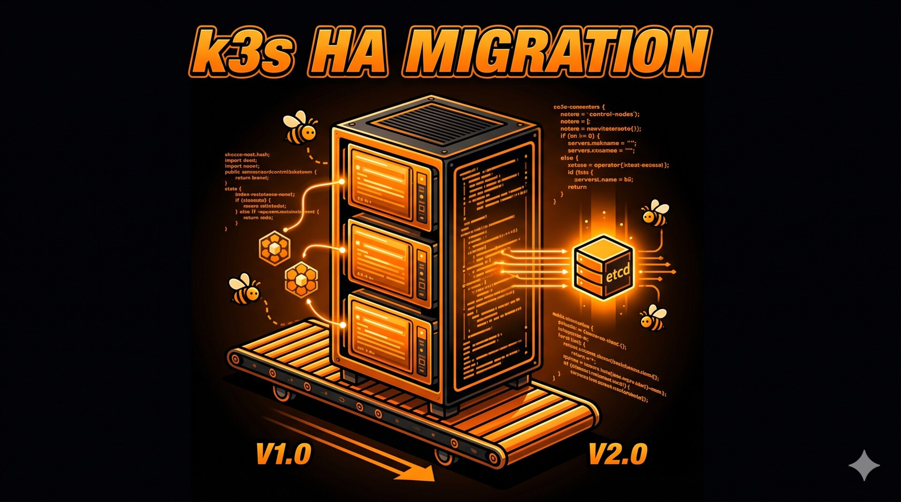
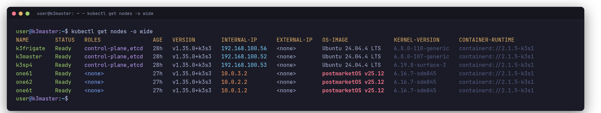
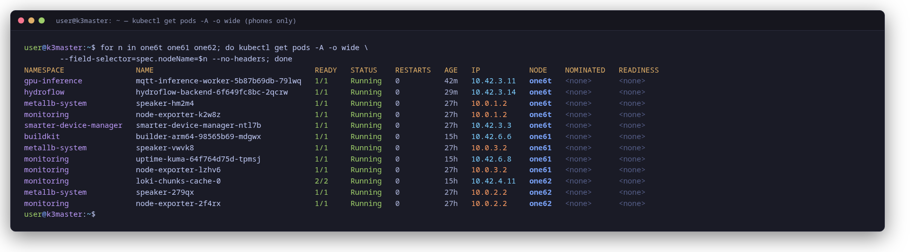

What broke during a k3s sqlite to embedded etcd HA migration
There is no in-place migration. Everything else in this post flows from that one sentence.
Mixed-arch cluster: amd64 control plane plus arm64 phone agents, post-migration.
I run a small Kubernetes cluster at home. Five nodes when I started this work — one laptop as control plane, three OnePlus 6 phones as worker agents, and an i5 mini-PC with a GTX 1050Ti for Frigate NVR. The control plane was a single k3s server with the default sqlite datastore. One node down meant the whole cluster down.
I wanted real HA: three control-plane nodes, embedded etcd, and quorum that survives node loss.
This is the honest part of the story.
Architecture, before and after
Before:
k3master(.52) — laptop, sole control-plane, sqlite datastorek3frigate(.56) — agent only, GPU node for Frigateone6t / one61 / one62— phone agents on USB tether
After:
k3master(.52) — control-plane, etcd memberk3frigate(.56) — control-plane, etcd member, GPU nodek3sp4(.53) — Surface Pro 4, new control-plane, etcd memberone6t / one61 / one62— agents, rejoined on new PKI
LAN 192.168.100.0/24
|
+-------+-----+-------+-------+
| | | |
k3master k3frigate k3sp4 gitea LB
.52 .56 .53 .206
(CP+etcd)(CP+etcd) (CP+etcd)
| | |
+---USB tether---+ |
| | |
one6t one61 one62 (agents, 10.0.X.2)
The two new things on the right are k3sp4 and gitea. Everything else moved
roles.

All six nodes Ready after the migration. The postmarketOS lines are the surprising thing — k3s control plane on amd64, worker agents on Snapdragon 845 phones.
Kubernetes reconciliation is not stateless. Every layer carries memory of the cluster it came from — and that is the part of this migration that ate the most hours.
There is no in-place migration
k3s does not turn a sqlite single-master into an embedded etcd cluster. You uninstall it,
reinstall with --cluster-init, and reconcile the workloads from a backup.
I took ten minutes to confirm this in the docs and another twenty to accept it. The thing the docs are very polite about is that the cost of HA was a planned outage long enough to rebuild the control plane from scratch. Plan accordingly.
The decision came down to two things:
- Embedded etcd over external Postgres: fewer moving pieces, no extra SPOF, ships with k3s. Trade-off: one node losing its disk means etcd has to be rebuilt from a snapshot.
- Migration window in one shot: backup, rebuild, restore. Trade-off: long single outage instead of a phased move, but the alternative (running parallel clusters with workload migration) was much more complex for a homelab with stateful workloads.
So I built a backup script. Then another one for the destructive part. Then a third for
the restore. The clean version of any of these lives in ~/homelab-config/ now.
The first attempts did not.
Backup is more than kubectl get all -A
I learned this the hard way. The first instinct is to dump everything with kubectl
get all -A -o yaml and call it a backup. It is not.
The things kubectl get all does not capture:
- CRDs (they are cluster-scoped and not in
all) - ConfigMaps and Secrets
- PersistentVolumes (the cluster-side claim record)
- Helm release metadata in the
kube-systemsh.helm.release.v1.*secrets - The raw etcd / sqlite database
- Local-path PV data that lives in
/var/lib/rancher/k3s/storage/
A complete backup walks every API resource by kind, dumps each separately, tars the sqlite db, and rsyncs the hostPath PV data away from the disk that is about to be wiped. About 336 MiB total in my case. Most of that was Loki chunks I did not actually want to keep.
The restore script reads each per-kind yaml back in a deliberate order — CRDs first,
then namespaces, then ServiceAccounts, then RBAC, then ConfigMaps and Secrets, then PVs,
then PVCs, then workloads, then Services. Every yaml gets stripped of
metadata.resourceVersion, metadata.uid,
metadata.creationTimestamp, metadata.managedFields, and
status: before kubectl apply. Without that strip step, half the
resources error out with "field is immutable" or just refuse to bind.
PVs remember the cluster they came from
The first instinct is to apply the backup PV yaml and trust the PVCs to rebind to their old volumes. It almost works.
The hostPath PVs come back fine — five of them with STATUS: Released.
Looks like a normal recovery state. Bound to their old claims.
Then the new PVCs sit in Pending. Forever.
The reveal, an hour later: a backup-dumped PV carries its old claimRef.uid
— the UID of the PVC that was bound to it in the previous cluster. The
recreated PVC has a fresh UID. The PV's claimRef still points at the dead
one. K8s refuses to rebind because the PV thinks it is already claimed by someone else.
The fix is one kubectl patch per PV:
kubectl patch pv chickenflow-postgres-pv \
--type=json -p='[{"op":"remove","path":"/spec/claimRef"}]'
That removes the stale claimRef and lets the PV transition back to Available.
The matching PVC then binds within seconds.
I had five PVs to patch. I have it scripted now.
CRDs are not just YAML
Here is where the backup file fought me back.
kubectl get crd -o yaml > crds.yaml produces a file that Python's
yaml.safe_load_all will refuse to parse. Somewhere in the dump kubectl emits
a YAML 1.1 tag that the parser does not have a constructor for —
tag:yaml.org,2002:value. I tried yaml.full_load, I tried
sed-stripping the offending tag, neither was clean.
The pragmatic path was different: identify which CRD groups were in the cluster (MetalLB,
Prometheus operator, Traefik, plus k3s defaults), then reinstall each from the upstream
manifest matching the version that was already running. The image tag in the backed-up
Deployment yaml told me which version. MetalLB v0.14.9 native manifest, Prometheus
operator v0.89.0 CRD bundle, applied with --server-side because the
prom-operator CRDs are too large for client-side apply.
Custom CRDs that weren't from upstream charts I would have lost. I got lucky — I didn't have any.
This was probably the worst surprise of the migration. A backup file that fails to deserialize is the kind of thing you discover at exactly the wrong moment.
A Surface Pro 4 as Kubernetes control plane
The third control plane is a Surface Pro 4 — a touchscreen tablet from 2015, 8 GB RAM, 256 GB SSD, gigabit through the Surface Dock. Already in the house. The decision was cost, not specs.
Two things bite you when you turn a Surface into a 24/7 server:
-
The default systemd-logind config suspends the machine when you close the lid, no
matter what the BIOS says. Mask
sleep.target suspend.target hibernate.target hybrid-sleep.targetand setHandleLidSwitch*=ignorein/etc/systemd/logind.confbefore joining the cluster. - The Surface Dock USB-Ethernet sometimes negotiates with NIC power-save quirks that show up as 1.2-second ICMP RTT. Watch ping latency for a minute before trusting it for cluster traffic.
Phones are not headless
Memory I had filed away from previous work: the OnePlus 6 phones run postmarketOS with OpenRC, headless.
Wrong. They run systemd with the phosh desktop
environment on tty1, with the full gsd-* daemon stack, feedbackd, UPower,
libcanberra. They are k3s worker nodes and full phone userspace at the same time.
doas requires a password.
After the .52 reroll the phones needed to be re-onboarded with new PKI. The non-obvious
bit: phones reach the API server through their USB-tether peer IP
(10.0.X.1), not the LAN address of .52. They cannot route to the
LAN. The install command had to use the per-phone gadget endpoint:
INSTALL_K3S_EXEC='agent --node-ip 10.0.1.2 \
--node-name one6t --flannel-iface usb0'The first version of the rejoin script also got eaten by outer-shell quoting — variables expanded on my laptop instead of on the phone, install ran with empty env. The script-file-then-scp pattern is the only reliable way to ship multi-host shell to interactive doas. Inline heredocs in chat lose to copy-paste mangling, em-dash typos, and TTY allocation breaking auth at the second hop.

Real workloads on the phone agents — mqtt-inference-worker, hydroflow-backend, the arm64 buildkit, loki-chunks-cache. Not demo pods.
The registry that wasn't
Gitea was running on emptyDir. Pre-migration the pod never restarted, so
nobody noticed. The reroll moved it onto a different node with a fresh
emptyDir, and the registry was empty. Two workloads
(hydroflow-backend, mqtt-inference-worker) immediately broke
because their images referenced the registry.
Migrating Gitea to a real PVC was its own task: hostPath on /mnt/frigate/gitea,
20 GiB, owned by UID 1000, pinned to k3frigate. New namespace
gitea. Init the wizard, create a CI user, generate a personal access token
with write:package scope.
Then rebuild the images that had been wiped. That is the next surprise.
qemu cross-compile is the wrong tool
Build times for arm64 images went from thirty-plus minutes to under ninety seconds. About a thirty-fold speedup. The change was architectural — stop emulating arm64 on an amd64 host, and use the cluster itself to do native per-arch builds.
The first attempt used docker buildx on the jumphost with
tonistiigi/binfmt registered for linux/arm64. The amd64 host
emulates arm64 via QEMU to produce a multi-arch manifest. It works. It is also miserable
— a single Python image with compiled dependencies took thirty minutes on a Debian
13 host, CPU pegged at 100% the whole time.
The fix was the buildx kubernetes driver. It provisions buildkitd pods
inside the cluster, one per architecture, scheduled onto a node of that architecture via
nodeSelector. linux/amd64 pod on k3sp4.
linux/arm64 pod on one of the phones. No emulation — native CPU on
each arch.
docker buildx create --bootstrap --name=k3 --driver=kubernetes \
--platform=linux/amd64 --node=builder-amd64 \
--driver-opt=namespace=buildkit,nodeselector="kubernetes.io/arch=amd64"
docker buildx create --append --bootstrap --name=k3 --driver=kubernetes \
--platform=linux/arm64 --node=builder-arm64 \
--driver-opt=namespace=buildkit,nodeselector="kubernetes.io/arch=arm64"This is also where the homelab phones earn their keep — they are not just kubelet hosts, they are the only native arm64 build infrastructure I have.
Two real gotchas with the k8s driver:
-
The auto-generated ConfigMap for
buildkitd.tomlrewrites double-quoted TOML registry keys to single quotes, which buildkit then misparses. Workaround:kubectl patch cmto fix the quoting, thenrollout restart. -
buildkit's resolver does not apply
http=truefor IP-only registry hosts. So pushing to192.168.100.206over HTTP fails even with the mirror config. I added a/etc/hostsentry on the build host mappinggitea.gitea.svc.cluster.localto192.168.100.206, used that hostname for pushes. Cluster nodes do not need this — they use a different code path.
Each abstraction was doing its job correctly.
The failure was in the assumptions between layers.
The k3s 1.35 hosts.toml synthesis bug
This one is the most fun of the failures because it is silent.
After all five-and-a-half hours of migration, with workloads restored and image-rebuilds
pushed to Gitea, the two phone-pinned pods were still in ImagePullBackOff.
Kubelet on the phones was trying https://192.168.100.206:443 — Gitea
has no HTTPS listener. "No route to host."
I wrote /etc/rancher/k3s/registries.yaml with the standard k3s format
pointing the mirror at http://192.168.100.206. Restarted
k3s-agent. Confirmed the rendered containerd config.toml was
regenerated.
It was. The mirror block was missing.
The reveal, after a sub-agent dug into the k3s source: k3s 1.35 reads
endpoint: ["http://..."] from registries.yaml correctly, but
synthesizes
/var/lib/rancher/k3s/agent/etc/containerd/certs.d/<host>/hosts.toml
with server = "https://<host>/v2" — defaulted to HTTPS regardless
of the scheme in your endpoint. Containerd then silently ignores the
[host."http://..."] block in the same file because the top-level
server line wins.
The fix is a small shell script (/usr/local/bin/fix-gitea-hosts.sh) that
overwrites hosts.toml after k3s renders it, plus a systemd drop-in:
[Service]
ExecStartPost=/usr/local/bin/fix-gitea-hosts.shApplied on the three phones first. Then preemptively on the three control-plane nodes — because they have the same latent bug, just hidden by the fact that nothing scheduled on them was pulling from Gitea yet.
This is not ideal. It is a workaround for what looks like an upstream bug worth filing. It is also the only reasonable thing to do at midnight after a long migration.
Things that went wrong
Yaml constructor on the CRD backup. kubectl get crd -o yaml
emits a tag that Python yaml.safe_load_all rejects. Reinstalled CRDs from
upstream manifests at matching versions instead.
Phone install script lost env vars. First rejoin script used outer SSH double-quoted heredocs. Variables expanded on the laptop, sent empty to the phone. Fix: write script locally, scp to .52 in single-quoted form, run there.
Helm release metadata gone after yaml restore. Loki was a helm release.
Pure-yaml restore brought the pods back but did not recreate the
sh.helm.release.v1.loki.v1 secret. helm list showed no release.
Future helm upgrade would have failed. Fixed by
helm install --replace from the backed-up values.yaml.
nvidia-device-plugin DaemonSet had DESIRED=0 post-restore.
Selector wanted nvidia.com/gpu.present=true. The label was on
k3frigate pre-reroll but the node object was rebuilt fresh during the
agent-to-server reroll. Manually relabeled. Then the DS scheduled and Frigate started
pulling GPU.
Hydroflow-backend health probe pointed at /health. App
actually exposes /healthz (200) and /readyz (with DB check).
Probe was a guess in the original manifest, not based on the running code. Fixed.
Impact
Numbers, approximate but honest:
- Control-plane resilience: 1-node SPOF → 3-member etcd quorum. Can lose any single node and keep accepting writes.
- Build performance: 30+ min arm64 builds on qemu → ~70 seconds on buildx k8s driver. About 30x.
- Recovery maturity: manual rebuild → scripted backup + stripped-yaml restore + PV-rebind handling, committed to IaC.
-
Namespace hygiene: 13 squatting workloads in
default→ 0. Everything in a proper namespace now. - Image-locality failures: 4 pods stuck → 0 (after registry recovery + k3s 1.35 workaround + DB env fix on hydroflow-backend).
- Cluster size: 5 → 6 nodes (added Surface Pro 4 as CP3).
- Destructive window: ~1 hour outage. Restore + cleanup: ~3 hours. 4 IaC commits pushed, including a 22-file reverse-engineering pass to bring previously-undocumented workloads into git.
The HA part is the headline. More importantly, recovery is now scripted, repeatable, and stored as infrastructure code instead of tribal memory. Every silent assumption that broke during the migration is now either documented or fixed in code.
Design decisions worth naming
- Embedded etcd over external Postgres. Fewer moving parts. The trade-off is etcd snapshot restore complexity if a node loses its disk. Acceptable for the scale.
- Surface Pro 4 as CP3. Cheap (already owned). Trade-off: lid-switch / sleep / NIC power-save quirks to mask. Documented now.
-
Re-pin mosquitto from a phone to k3frigate during the reroll. The MQTT
broker is critical for hydroflow + chickenflow + Frigate events. Phones are not
reliable enough to host critical brokers. Trade-off: the phones lose one workload,
k3frigate gains a hostPath PV at
/mnt/frigate/mosquitto. - buildx kubernetes driver over remote-SSH-to-phone. No doas-passwordless setup needed for the build path itself — buildkitd runs as a pod, kubelet handles privilege. Trade-off: must keep the cluster up to do builds.
-
Gitea on a hostPath PVC pinned to
k3frigate. Persistence over portability. Trade-off: gitea cannot be drained offk3frigate. Acceptable —k3frigateis the most stable node.
The payoff
The artefact is a 3-node HA control plane that survives single-node loss. The honest part is what got built around it: a stripped-yaml restore script that handles re-binding of stale PVs, a containerd-mirror workaround for a k3s 1.35 bug, a buildx kubernetes driver that turns my phones into a multi-arch build farm, a registry that survives pod restarts.
The skill the work taught is not "Kubernetes." It is recognising that every component in the cluster remembers more about the old cluster than I expected. PVs remember their claimants. ConfigMaps remember their resourceVersion. Helm remembers its release metadata in a secret. CRDs remember their schema. The kubelet remembers its CA certificate. Each of these became a small, isolated bug during the migration.
The migration forced me to treat the homelab as production infrastructure instead of a collection of running containers.
The cluster is the artefact. The understanding is the deliverable.
Cluster context
| Node | Hardware | OS | Role |
|---|---|---|---|
k3master (.52) |
Lenovo IdeaPad Flex 5, Intel i5 | Ubuntu 24.04 | Control-plane, etcd |
k3frigate (.56) |
i5-6600, GTX 1050Ti, 2 TB SATA | Ubuntu 24.04 | Control-plane, etcd, GPU node (Frigate, face recognition, mosquitto) |
k3sp4 (.53) |
Surface Pro 4, Intel m3, 8 GB | Ubuntu 24.04 + Surface kernel | Control-plane, etcd |
one6t / one61 / one62 |
OnePlus 6/6T, Snapdragon 845, 4 GB | postmarketOS (systemd + phosh) | Agents — gitea, gpu-inference, hydroflow-backend, postgres |
jumphost (.62) |
Mini-PC | Debian 13 | SSH bastion, backup target |
k3s v1.35.0+k3s3 across the cluster. CNI: flannel + VXLAN. LB: MetalLB ARP
mode. Registry: self-hosted Gitea OCI at 192.168.100.206.
The manifests, scripts, and notes live at
github.com/ivemcfire/homelab-config
in the apps/, cluster/containerd-mirrors/, and
network/ subdirectories.
Previous posts: Frigate NVR migration on k3s · k3s phone cluster build · Sidecar config-sync pattern